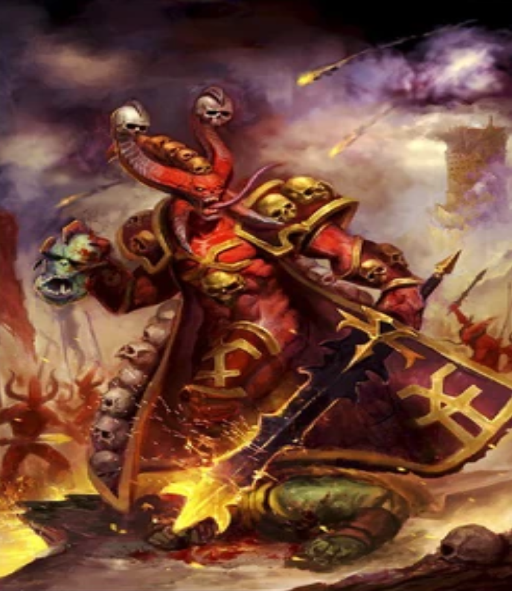

"Khorne, also called the "Blood God," the "Lord of Skulls," and "Kharneth" among many other titles, is the Chaos God of war, hatred, rage, wrath, blood, martial honour, strength and murder. Its portfolio of interest covers the most basic and brutal of sentient emotions and actions, such as hate, anger, rage, the desire for destruction and the joy of killing one's enemies. Every act of killing or murder in the material universe feeds and empowers Khorne; the more senseless and destructive, the better. However, though Khorne is the god of bloody slaughter, it is also the god of martial pride and honour, of those who set themselves against the most dangerous foes and earn victory against the odds."
Following the end of the Horus Heresy, the World Eaters Legion was finally sundered as a coherent military force during the Legion Wars at the Battle of Skalathrax on the Daemon World of the same name. There the World Eaters faced off against the Emperor's Children Chaos Marines, the devoted servants of the Chaos God Slaanesh, the chief rival among the Ruinous Powers of the World Eaters' patron Khorne. The two armies of Traitor Marines clashed through the planet's storm lashed cities of black rock and ice. City after city fell to the berserker assaults of the World Eaters, as the chosen of Khorne hurled themselves at the Emperor's Children, slaughtering the hated Slaaneshi devotees until forced to halt their attack as the Daemon World's freezing night fell. The potent Champion of Khorne and former Equerry Khârn screamed his frustration as the Legion paused in its attack, demanding that he be allowed to continue killing. Furious with his comrades for taking shelter while there were still enemies left to slay, Khârn took up a Flamer and turned its heat upon his fellow World Eaters Berserkers and those who tried to stop he cut down with great sweeps of his chainaxe. As the flames spread to the rest of the city, the World Eaters Legion tore itself apart, berserkers fighting both each other and the Emperor's Children for what little shelter remained. Khârn burned and hacked his way through the flaming ruins of Skalathrax, having become the living incarnation of the Blood God himself. From that day forth, the World Eaters were broken as a Legion, becoming instead scattered warbands of berserk Heretic Astartes, forever in search of more blood to spill. Khârn now stalks the Eye of Terror and only the most insane of Khornate warriors dare to fight alongside him, since few who do so ever survive. Following this conflict the raving blood thirst of the World Eaters broke down any form of organisation and control. Units of World Eaters of varying sizes broke off from the main force to seek out glory and skulls for Khorne. In the wake of Khârn's slaughter, all of the captains who had led the Legion before the battle had been killed. This ensured that in the future no warband leader of the World Eaters could claim a right of command due to their prior position rather than by dint of their sheer martial ability. Such was the way of Khorne. Squads of ancient World Eater berzerkers can now be found as parts of larger Chaos armies, in Khorne-sworn forces, or even in small teams called warbands -- always seeking combat, blood and skulls.
Chaos Herald - Skulltaker
Skulltaker, also known as U'zuhl, is an infamous Bloodletter and Herald of Khorne who has claimed a Juggernaut Daemonic Steed named Khul'tyran as its mount and has been anointed as the Blood God's own Sacred Executioner. Skulltaker often goes to war at the head of the Cohort of Blood, an assemblage of the greatest Bloodletters selected from amongst the daemonic legions' ranks. The Sacred Executioner's mere presence on the field of battle drives Khorne's Lesser Daemons to impossible heights of frenzy, as all Bloodletters regard him as the pinnacle of their kind and an exemplar of all that their bloodthirsty god demands. Whether battling against the armies of realspace, the legions of Khorne's rivals, or even against fellow warriors of the Blood God, Skulltaker will always seek out the greatest champions of the enemy. Upon sighting one worthy of his skills, Skulltaker will strike down all who stand between it and its quarry, contemptuously hacking its way through the press of melee so that it may confront its chosen opponent and offer them the rite of single combat. Those that flee are cut down or beheaded without thought, not worthy of any greater ceremony. Those brave or foolhardy enough to accept the Champion of Khorne's bellowed challenge suffer an even worse fate.
Traitorous Primarch - Angron
Angron is the Red Angel, Lord of the World Eaters, the Daemon Primarch of Khorne. Raised as a slave in the brutal fighting pits of Nuceria, this maddened demigod sought glorious death in the battles of the Horus Heresy – only to be damned to an eternity of undying rage. For ten thousand years he has savaged the Imperium, fury given immortal form, the butchers of the XII Legion following in his bloody wake. When he steps forth into realspace, Angron is an unstoppable engine of destruction with the strength to tear apart bastions with his bare hands and stop Titans in their tracks. His very presence drives those around him into a frenzy of wrath and fear, as he carves his way through entire armies in a whirlwind of apocalyptic bloodshed.
Greater Demon
A Bloodthirster is the Greater Daemon of Khorne, and each is a manifestation of the unreasoning rage and savagery of total war. It is said that there are no more powerful masters of battle in the entire galaxy than the Greater Daemons of the Blood God and that none may stand before them. They are the very essence of brutality, every blow ever struck and life ever taken in anger distilled into a single, towering form of iron and sinew. As the living embodiments of war, rage and murder, Bloodthirsters represent the bloodiest side of warfare and are renowned as the greatest warriors amongst daemonkind. Only the boldest and most heroic of mortal champions would even stand the slimmest chance of survival in combat with a Bloodthirster, and an even smaller chance of victory.
Lesser Demon

A Bloodletter, also known as a "Chosen of Khorne," a "Warmonger of Khorne," "Slaughter-kin" and the "Crimson Death," is a Lesser Daemon (Khak'akamshy'y in the Dark Tongue) that serves as one of the eager daemonic foot soldiers of the Chaos God Khorne's Blood Legions. As a host, they march as one, in formations with supernatural precision, but in battle, they try to outdo each other in ruthless acts of cruelty and savagery. The daemonic hordes of Khorne are largely made up of ferocious Bloodletters. These Lesser Daemons are deadly warriors believed to have been foremost amongst the Blood God's followers in mortal life and whose will is as implacable and blood-hungry as that of Khorne himself. Sharp, needle-like teeth stud a Bloodletter's slavering jaws. Its serpentine tongue constantly flickers to taste the spilled blood of those it slays. Rippling muscles lie barely concealed beneath the Bloodletter’s scaly red hide, knotted sinews that give the strength sufficient for its jet-black claws to pierce the most unyielding armour. This might is guided by a killing instinct that surpasses that of mortal men. A Bloodletter is unburdened by any other thought or compulsion than to reap the lives of Khorne's foes and claim skulls in the name of its divine lord. They carry massive Warp-metal swords known as Hellblades, great two-handed weapons that cut effortlessly though any armour crafted by mortals.